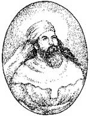

Zerdüştlük, günümüzde İran’ı, Hindistan’ı ve Çin’i kapsayan çok geniş bir bölgede yaklaşık 2 bin yıl boyunca hakim olan bir dindir. Bu inancın kurucusu aynı zamanda bir şair olan Zerdüşt’tür. MÖ 7. yy’da Pers ülkesinde yaşadığına inanılmaktadır.

Öğretisi Asya kültürü ve dünya dinleri üzerinde büyük bir etki yapmışsa da Zerdüşt’ün yaşamı hakkında pek az tarihi bilgi bulunmaktadır. Doğduğu yüzyıl bile tartışmalıdır. MÖ 628 yılında muhtemelen bugün İran sınırları içerisinde kalan bir yerde doğduğu tahmin edilmektedir. Yerel bir tapınakta rahip olarak yetiştirilmiştir.
Mitolojide görüşlerini kabul ettirmek için mücadele eden ileri görüşlü bir din adamı olarak tanıtılan Zerdüşt en sonunda fikirleriyle üstün gelmiştir. Ailesinin karşı çıkmasına rağmen yirmili yaşlarındayken evden ayrılmıştır. Bundan sonraki on yılını “iyi din” olarak adlandırdığı inancın ortaya çıkmasıyla son bulacak olan ruhsal bir yolculuk yaparak geçirmiştir. Takip eden on yıl boyuncaysa kendisine müritler aramıştır. Uzunca bir süre büyük başarılar elde edemese de Bactrian Kralı’nın hasta olan atını tedavi edince talihi dönmüştür. Kral kısa süre içerisinde Zerdüştlüğü benimsemiştir. Zerdüşt 79 yaşındayken bilinmeyen bir sebeple öldürülmüştür.
Ölümünden sonra Zerdüşlük Asya’da hızla yayılmış ve Pers İmparatorluğu’nun hakim inancı haline gelmiştir. Zerdüştlüğün tanrısı olan Ahura Mazda, üstün bir güç ve ruhların nihai yargıcıdır. Zerdüştler iyiyle kötünün birbirinden ayrılacağı ölümden sonraki hayata inanırlar. Tek tanrı inancının altını çizmesi ve ölümden sonra gerçekleşecek nihai bir yargılama düşüncesi ile Zerdüştlük, Yahudilik ve Hıristiyanlık inançlarının öncülü konumundadır. Aralarında Hinduizm ve Budizmin de bulunduğu pek çok Doğu inancı ile de benzerlikler taşımaktadır.
İran’ın 7. yy’da Müslümanlar tarafından fethi ile birlikte Zerdüştlüğün merkezi Batı Hindistan’a kaymıştır. Zerdüşlerin sayısı 20. yy’da hızla azalmıştır. Günümüzde dünyanın dört bir yanına dağılmış iki yüz binden az Zerdüştün yaşadığı tahmin edilmektedir. Bunların büyük bir bölümü ise İran ve Hindistan’da yaşamaktadırlar.
Ek Bilgiler
1- Zerdüştler dinlerini yaymak için çalışmamakta ve yeni insanları dinlerine kabul etmemektedirler. Bu durum onların sayılarının sürekli bir biçimde azalmasına neden olmaktadır.
2- Günümüzde yaşayan ünlü Zerdüştlerin arasında New York Filarmoni Orkestrası eski şefi Zubin Mehta (1936-) da bulunmaktadır.
3- Alman Filozufu Nietzsche (1844-1900), 1885 yılında Böyle Buyurdu Zerdüşt isimli bir kitap yazmış ve bu kitabında Zerdüştlerin birçok ahlaki önermesine karşı çıkmıştır. Kitap bestekar Richard Strauss’a (1864-1949) aynı adlı bir senfonik şiir yazması için ilham vermiştir. Bu beste daha sonra 1968 yapımı 2001: A Space Odyssey (2001: Bir Uzay Yolculuğu) filminde çalınmıştır.